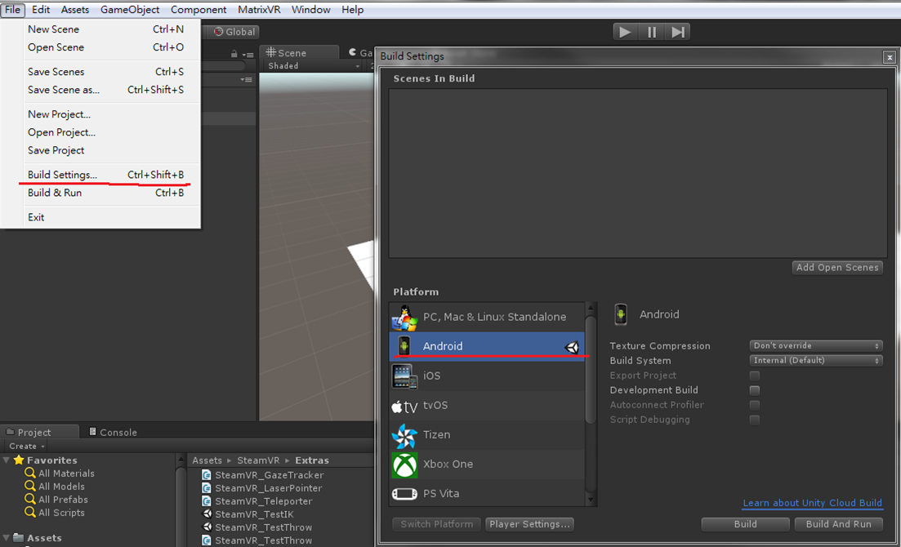

Daydream to Wave VR¶
This section will help you to port mobile application(Daydream) to the Wave VR platform. There are two major parts:
- Unity project setting and Import of Wave VR SDK package
- Replacing Camera and Controller with Wave VR
Unity project setting and import Wave VR SDK package¶
In Wave VR, import SDK and edit project setting.
Unity project setting¶
- 1.Make sure platform as the “Android” in “build Settings”.
- 
- 2.Turn off “Virtual Reality Supported” in Player Settings.

Import Wave VR SDK¶
- Download the latest Wave VR SDK and import it.

Replace Camera and Controller to Wave VR¶
Adjust the following components:
- Camera
- Controller
In Wave VR, the Camera is a specific prefab so you need to replace Main Camera object with WaveVR object and delete relative scripts from Daydream.
- From:

- To:

Controller¶
Below are the button comparison and steps for controller script replacement.
GVR Controller compared with Wave VR¶
In GVR controller API, there are different states listed below:

In Wave VR controller API, there are:
- Touch button
- Trigger button
- Menu button
GVR directly gets the status of controller by variables. However, Wave VR uses “device” type, “buttonId” mask and functions to get the states.
if (WaveVR_Controller.Input(device).GetPressDown(buttonId))
{
// if button with buttonId is pressed down.
}
You can check Wave VR controller section to get more details.
Note: Wave VR supports multiple VR devices. Some buttons don’t existed in actual devices so states of these buttons may always get “false”. For example, there is no Grip button in the actual Link controller device.

GVR Controller replaced with Wave VR Controller¶
There are two methods to do it.
Use default controller prefab¶
First, you need to delete all Daydream’s controller scripts and add prefabs named Link_6DOF_Controller_MultiComponent_L and Link_6DOF_Controller_MultiComponent_R into the scene.

Use controller script only¶
In Wave VR the orientation of controller directly affects the orientation of object that has the WaveVR_PoseTracker script. You need to add “WaveVR_PoseTracker” script on the new gameobject that you want to be affected by controller.